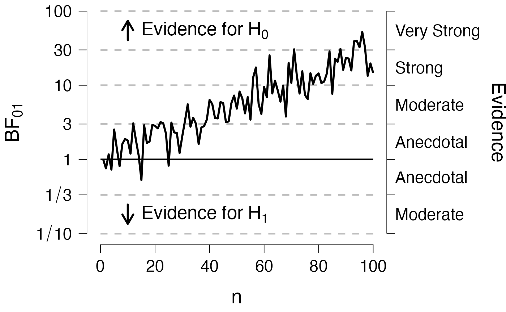
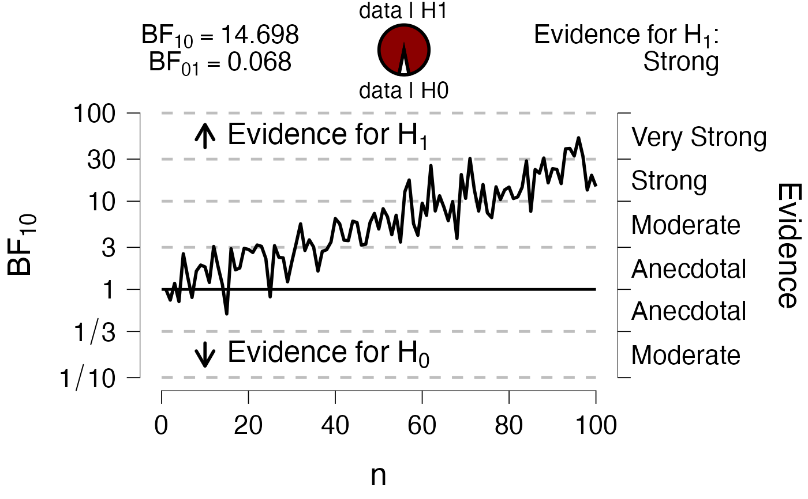
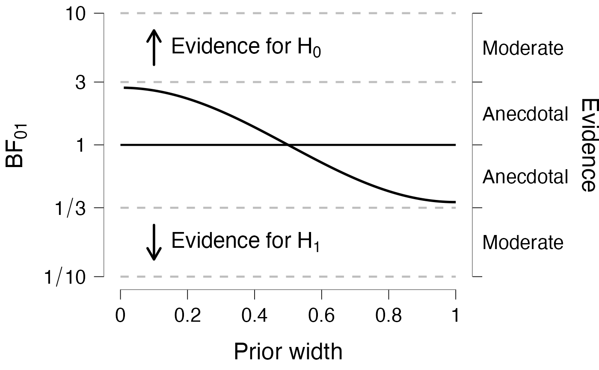
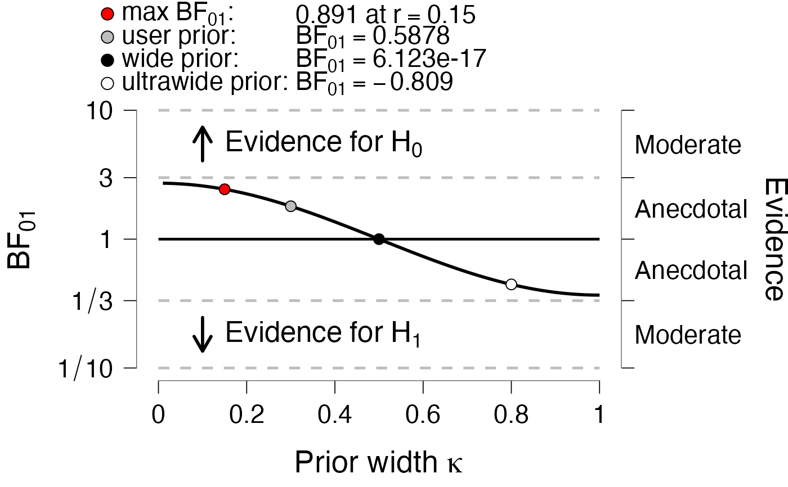
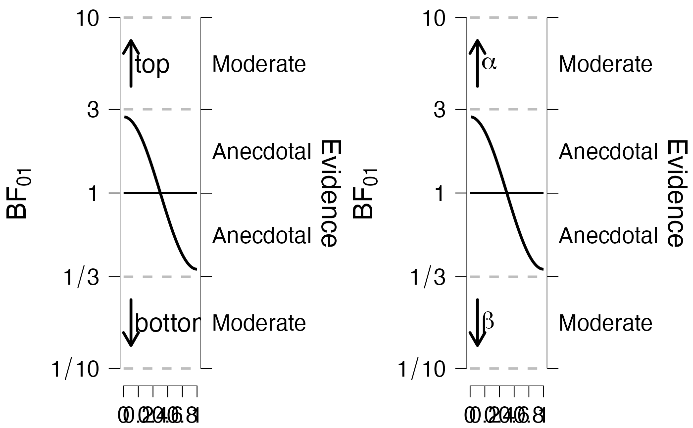
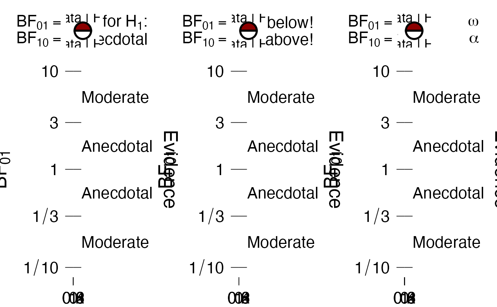

PlotRobustnessSequential.RdCreate a robustness or sequential plot
PlotRobustnessSequential(
dfLines,
dfPoints = NULL,
BF = NULL,
hasRightAxis = TRUE,
xName = NULL,
yName = NULL,
addEvidenceArrowText = TRUE,
drawPizzaTxt = !is.null(BF),
evidenceLeveltxt = !is.null(BF),
pointLegend = !is.null(dfPoints),
linesLegend = !is.null(dfLines$g),
bfSubscripts = NULL,
pizzaTxt = hypothesis2BFtxt(hypothesis)$pizzaTxt,
bfType = c("BF01", "BF10", "LogBF10"),
hypothesis = c("equal", "smaller", "greater"),
pointColors = c("red", "grey", "black", "white"),
lineColors = c("black", "grey", "black"),
lineTypes = c("solid", "solid", "dotted"),
addLineAtOne = TRUE,
bty = list(type = "n", ldwX = 0.5, lwdY = 0.5),
plotLineOrPoint = c("auto", "line", "point"),
pointShape = rep(21, 3),
pointFill = c("grey", "black", "white"),
pointColor = rep("black", 3),
pointSize = c(3, 2, 2),
evidenceTxt = NULL,
arrowLabel = NULL,
...
)A dataframe with $x, $y, and optionally $g. $y is assumed to be on the log scale.
A dataframe with $x, $y, and optionally $g.
Numeric, with value of Bayes factor. This MUST correspond to bfType.
Logical, should there be a right axis displaying evidence?
String or expression, displayed on the x-axis.
String or expression, displayed on the y-axis.
Logical, should arrows indicating "Evidence for H0/H1" be drawn?
Logical, should there be text above and below the pizza plot?
Logical, should "Evidence for H0: extreme" be drawn?
Ignored if !is.null(dfLines$g) && linesLegend.
Logical, should a legend of dfPoints$g be shown?
Logical, should a legend of dfLines$g be shown?
String, manually specify the BF labels.
String vector of length 2, text to be drawn above and below pizza plot.
String, what is the type of BF? Options are "BF01", "BF10", or "LogBF10".
String, what was the hypothesis? Options are "equal", "smaller", or "greater".
String vector, colors for points if dfPoints$g is not NULL.
String vector, colors for lines if dfLines$g is not NULL.
String vector, line types if dfLines$g is not NULL.
Logical, should a black line be draw at BF = 1?
List of three elements. Type specifies the box type, ldwX the width of the x-axis, lwdY the width of the y-axis.
String, should the main geom in the plot be a line or a point? If set to auto, points are shown whenever nrow(dfLines) <= 60.
String, if plotLineOrPoint == "point" then this controls the shape aesthetic.
String, if plotLineOrPoint == "point" then this controls the fill aesthetic.
String, if plotLineOrPoint == "point" then this controls the color aesthetic.
String, if plotLineOrPoint == "point" then this controls the size aesthetic.
String to display evidence level in the topright of the plot. If NULL then a default is used.
String to display text next to arrows inside the plot. If NULL then a default is used.
Unused.
# Data for sequential
#
set.seed(1)
n <- 100
dfLines <- data.frame(
x = seq_len(n),
y = c(0, rnorm(n - 1, seq_len(n - 1) / 30, .5)) # log Bayes factor
)
# Sequential plot
#
PlotRobustnessSequential(
dfLines = dfLines,
xName = "n",
)

# Sequential plot add info
#
BF10 <- exp(tail(dfLines, 1)$y)
PlotRobustnessSequential(
dfLines = dfLines,
xName = "n",
BF = BF10,
bfType = "BF10"
)

# Data for robustness plot
n <- 100
x <- seq_len(n)/100
y <- cos(pi*x)
dfLines <- data.frame(
x = x,
y = y
)
# Robustness plot
#
PlotRobustnessSequential(
dfLines = dfLines,
xName = "Prior width"
)

# In JASP, we often prefer more information in the plot
x <- dfLines$x[c(15, 30, 50, 80)]
y <- dfLines$y[c(15, 30, 50, 80)]
maxBFrVal <- x[1]
maxBF10 <- y[1]
BF10user <- y[2]
BF10w <- y[3]
BF10ultra <- y[4]
BFsubscript <- "[0][1]"
label1 <- c(
gettextf("max BF%s", BFsubscript),
gettext("user prior"),
gettext("wide prior"),
gettext("ultrawide prior")
)
# some failsafes to parse translations as expressions
label1[1] <- gsub(pattern = "\\s+", "~", label1[1])
label1[-1] <- paste0("\"", label1[-1], "\"")
label1 <- paste0("paste(", label1, ", ':')")
BFandSubscript <- gettextf("BF%s", BFsubscript)
BFandSubscript <- gsub(pattern = "\\s+", "~", BFandSubscript)
label2 <- c(
gettextf("%s at r==%s", format(maxBF10, digits = 4), format(maxBFrVal, digits = 4)),
paste0(BFandSubscript, "==", format(BF10user, digits = 4)),
paste0(BFandSubscript, "==", format(BF10w, digits = 4)),
paste0(BFandSubscript, "==", format(BF10ultra,digits = 4))
)
label2[1L] <- gsub(pattern = "\\s+", "~", label2[1])
dfPoints <- data.frame(
x = x,
y = c(maxBF10, BF10user, BF10w, BF10ultra),
g = label1,
label1 = jaspGraphs::parseThis(label1),
label2 = jaspGraphs::parseThis(label2),
stringsAsFactors = FALSE
)
PlotRobustnessSequential(
dfLines = dfLines,
xName = expression(paste("Prior width ", kappa)),
dfPoints = dfPoints
)

# convenience function for showing plots side by side. You may need to click zoom in Rstudio
# to properly view the plots.
showSideBySide <- function(..., nrow = 1L, ncol = ...length()) {
require(gridExtra)
jaspgraphplot2grob <- function(x) {
if (!inherits(x, "jaspGraphsPlot")) return(x)
else return(x$plotFunction(x$subplots, args = x$plotArgs, grob = TRUE))
}
gridExtra::grid.arrange(gridExtra::arrangeGrob(
grobs = lapply(list(...), jaspgraphplot2grob), nrow = nrow, ncol = ncol))
}
# arrow labels can be modified
g1 <- PlotRobustnessSequential(dfLines = dfLines, arrowLabel = c("top", "bottom"))
g2 <- PlotRobustnessSequential(dfLines = dfLines,
arrowLabel = jaspGraphs::parseThis(c("alpha", "beta")))
showSideBySide(g1, g2)
#> Loading required package: gridExtra

# text in the top right (evidence text) can be modified
g1 <- PlotRobustnessSequential(dfLines = dfLines, BF = 1)
g2 <- PlotRobustnessSequential(dfLines = dfLines, BF = 1,
evidenceTxt = c("I'm above!", "I'm below!"))
g3 <- PlotRobustnessSequential(dfLines = dfLines, BF = 1,
evidenceTxt = jaspGraphs::parseThis(c("alpha", "omega")))
showSideBySide(g1, g2, g3)
